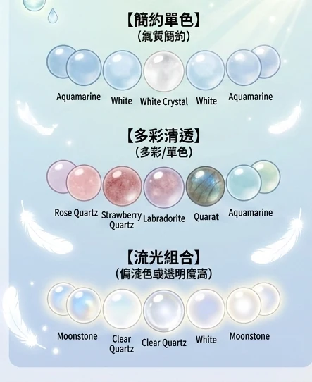
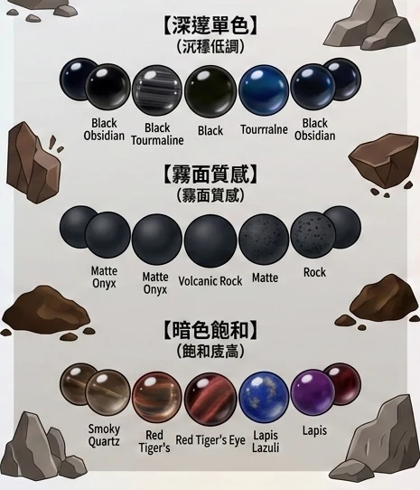
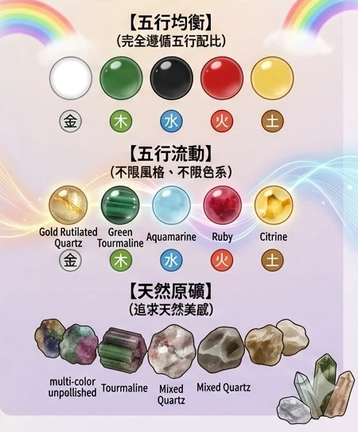
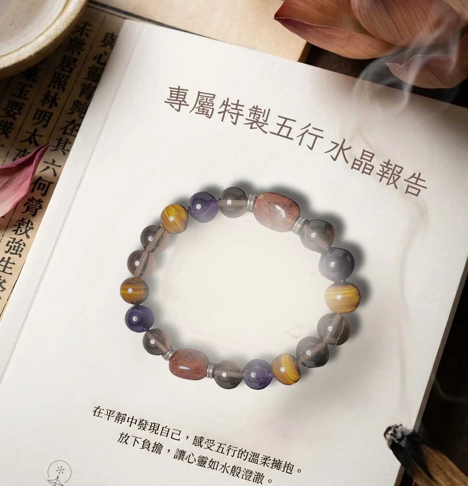

你會得到什麼
一套人生狀態的轉譯工具
不是算命，不是神效。是被理解的體感，加上一個看得見、摸得到的心理錨點。
被理解
用八字十神，勾勒你慣性壓抑的方式與行為模式。那種「有人懂」的體感，是一切的起點。
視覺錨點
摸到特定晶石，就提醒自己：該沉澱，還是該點火。顏色與排列的規律，是給日常的定錨。
情緒支撐
日常的儀式感，壓力來的時候有個著力點。它不替你解決問題，它陪你穩住自己。
為什麼是我們
五個，別人少做的堅持
我們選擇量化、而非通靈；科學、而非迷信。
工程級數據精確度
量化 而非 通靈Hamilton 最大餘額法精算每一顆比例，配比設上限、循五行相生做溢出轉移。相同輸入，會得到相同輸出。
臨床心理學降維轉譯
科學 而非 迷信我們不喊玄的。把命理語言，翻成 Gottman 溝通修復這類可操作的心理提醒。
真值仲裁與缺失懲罰
真實 而非 偽造缺時辰不偷補子時。走三柱模式，報告上的把握度從 100% 誠實標成 70%。我們寧可承認不足。
性別中立與多元適配
現代 而非 傳統中立化十神代碼，不做男女二分。任何一種伴侶組合，同樣適用。同性伴侶友善。
合規防火牆與自我證偽
安全 而非 冒進禁詞熔斷攔截，歷史案例回測通過才上線。業界少見地主動設對照組，承認命理尚未通過雙盲驗證。
最新消息
近期動態
現貨商品
設計好的，直接帶走
每一件都依排珠法與體感美學設計完成。庫存有限，看到喜歡的別猶豫。
下單走匯款或 LINE 轉帳；信用卡與行動支付之後開放。若系統忙碌，會自動整理訂單讓你複製給 LINE 真人下單。
個人化訂製
從你的八字，長出一串專屬
不是挑你喜歡的石頭，是算出你缺的那一個
先從國曆生日排出四柱，用真太陽時校正（一律以東經 120° 計算，我們不收出生地）。沒有出生時間就走三柱模式：時柱權重歸零、分母由 100 降為 80，報告上的置信度從 100% 標成 70%——那是我們對這份推論的把握自評，少的部分是時柱本來會給的細節，會讓配比的微調變粗一點，但不會讓整份推論失效。我們不偷補一個子時給你。
接著把五行分量量化成一組配比，再從 95 種晶石白名單裡取石。名單以外一律不用；每顆石頭只認一個主五行，不做「這顆什麼都補」的模糊歸類。
最後排珠：主珠取你最高的那個五行，強制置中；金與木、水與火不相鄰，中間一定隔一顆。每一顆的位置都有理由，報告會逐顆說明為什麼放它。
同一份配比，可以長成三種樣子。配比決定「放哪些石頭」，體感決定「看起來是什麼調性」——這兩件事是分開選的。

輕盈流光
Light & Fluid
偏淺色或高透明度，視覺壓力小。像清晨的露水，戴起來心情輕盈無負擔。
簡約單色／多彩清透／流光組合

內斂磐石
Solid & Deep
沉穩低調，暗色或霧面質感，飽和度高。像深邃的大地，給予視覺上的安定感。
深邃單色／霧面質感／暗色飽和

自由共振
Natural Mix
不限風格、不限色系，完全依五行配比呈現。尊重石頭的天然本色，適合不喜框架、追求天然美感的人。
五行均衡／五行流動／天然原礦
可以改嗎？
P1 不可改五行配比是命盤決定的目標，這一層固定。
P2 · P3 可微調同屬性白名單內換晶石、同五行換色系、換排列方式。
流程：你提異議 → 我們調替代路徑 → 重新演算 → 再請你確認。
想知道顆數怎麼算？
顆數 ＝ floor(手圍 ÷ 珠徑) ＋ 2（多兩顆做緩衝）。底價依「手圍 × 珠徑」查矩陣，級距間向上取。
展開完整底價矩陣
想多做一條？三軌方案給你參考
同一次命盤運算，可以只做一條，也可以加開別條、覆蓋不同面向。這不是必要選項，下方問卷的「訂製數量」就對應這裡。
| 方案 | 內容 | 適合 |
|---|---|---|
| A 主方案 | 五行配比內以視覺喜好選石 | 初次訂製、重穿搭 |
| B ＋錦囊組 | 加一條用神導向中性色系，直擊缺口 | 轉折期、需要決斷力 |
| C 完整三條 | 再加最柔和一條，貼合本命比例 | 想靜心、睡前配戴 |
訂製問卷
約 3 分鐘填完。送出後我們在 1 個工作天內聯繫你確認設計。
作品集
看看別人戴上的樣子
用兩個維度篩：排珠方式 × 體感美學。點一下照片看大圖。
排珠方式
體感美學
關於我們
我們不販售改變命運的承諾
我們販售的，是可追溯的文化推論。這是我們對你，最基本的誠實。
深淵
理解困局
八字引擎照見你性格裡的慣性與壓抑。
在旁
陪伴提醒
物理性的陪伴，目光觸及時校準步調。
光芒
心理導航
點亮你原本具備、卻被遺忘的潛能。

走了九個世代的路
從 2024 到現在，兩年疊代。
2024
系統雛形起步，第一代八字符號配珠邏輯成形。
2024–2025
導入五派硬仲裁與需求向量，配珠從經驗走向量化。
2025
加入心理學降維轉譯與 Gottman 七維，情侶對串成形。
2025–2026
建立合規防火牆與 Golden Set 回測，禁詞熔斷上線。
2026-07-12
封裝為 v1.1 一條龍最終執行包，個人與情侶雙線定版。
四個，我們不讓步的地方
確定論運算
相同輸入會得到相同輸出，排除當下情緒的干擾。
真值仲裁與缺失懲罰
缺時辰不補子時，誠實折算置信度。
性別中立與多元適配
中立十神代碼，任何伴侶組合同樣有效。
合規防火牆與自我證偽
回測通過才上線，主動承認尚未通過雙盲驗證。
把方法攤開給你看
「認識論誠實」不是口號。我們怎麼算、依據什麼，願意講清楚。
需求向量：六個分量
- 扶抑、缺口、調候、流年、盲派、意圖——六個分量各有固定權重，逐一計入。
- 「意圖」放的是你的痛點與核心功能，影響設有上限，不會蓋過命盤本身。
再往下的處理
- 五大命理學派各自主張，再做交叉硬仲裁。
- 配比設上下限，超出的循五行相生做溢出轉移。
- Hamilton 最大餘額法分配每一顆的歸屬，不四捨五入。
- 物理禁鄰：金與木、水與火不相鄰，中間插隔珠。
- 底價由「手圍 × 珠徑」查矩陣，級距間向上取。
來找我們
常見問題
你可能想問的
找不到答案？右下角問「小串」，或加 LINE 找真人。
訂單查詢
你的手串，走到哪了
輸入訂單編號＋聯絡方式末四碼，看光路走到哪一站。